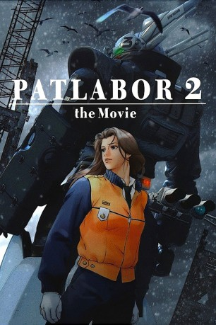
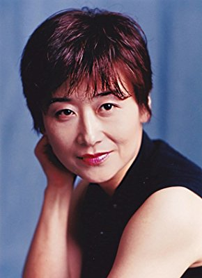

#2008 Patlabor 2 - The Movie
 
 IMDB-Wertung: 7.6 / 10
IMDB-Wertung: 7.6 / 10  Metascore: 0
Metascore: 0 
Patlabors sind riesige, von Menschen gesteuerte Roboter, die für zivile wie militärische Zwecke genutzt werden. Sowohl die japanische Polizei wie auch die Verteidigungsstreitkräfte haben eigene Patlabor-Einheiten. Südost-Asien 1999: Japan nimmt mittlerweile an Kriegseinsätzen der Vereinten Nationen teil. Diesmal soll ein Patlabor-Einheit eine sich im Dschungel versteckt haltende Terroristen-Gruppe ausheben – die Blauhelm-Truppe wird komplett aufgerieben. Der Leiter dieser Einheit: Yukihito Tsuge, schwört Rache an der japanischen Regierung, die für ihn nur aus rückgratlosen Weichlingen besteht. Tokyo 2002: Die Stadt wird durch eine Welle von Terroraktionen erschüttert. Ein Teil des Militärs spaltet sich ab und verhängt den Ausnahmezustand. Nur die Patlabor-Truppe kann Japan noch retten – schließlich kommt der Kopf hinter dieser gigantischen Verschwörung aus ihren Reihen...
Jahr: 1993
Dauer: 113 Minuten
FSK: 16
Land: Japan Studio: Rapid Eye MoviesTonspuren: DD2.0 - ,
Untertitel: Deutsch,
Auflösung: 1080p (1920x1032) Größe: 8314 MB
Genre: Action, Thriller, Drama, Sci-Fi, Animation/Trick, Mystery
Regisseur: Mamoru Oshii
Drehbuch: Kazunori Itô
Soundtrack: Kenji Kawai
Darsteller:
- Briony Glassco als Noa, 1995
 Roger Craig Smith als Gotoh, 2006
Roger Craig Smith als Gotoh, 2006 Megan Hollingshead als Nagumo, 2006
Megan Hollingshead als Nagumo, 2006 Martin McDougall als Oota, 1995
Martin McDougall als Oota, 1995 Sam Riegel als Oota, 2006
Sam Riegel als Oota, 2006 Joe Ochman als Shinshi, 2006
Joe Ochman als Shinshi, 2006 Jason Miller als Hiromi / Yamadera, 2006
Jason Miller als Hiromi / Yamadera, 2006 William Roberts als Sakaki, 1995
William Roberts als Sakaki, 1995 Naoto Takenaka als Arakawa
Naoto Takenaka als Arakawa- Kim Strauss als Arakawa, 2006
 Robert Clotworthy als Tsuge, 2006
Robert Clotworthy als Tsuge, 2006- Lisa Enochs als Walla, 2006
 Terrence Stone als Walla
Terrence Stone als Walla- Mîna Tominaga als Noa
- Julie Ann Taylor als Noa, 2006
 Toshio Furukawa als Asuma
Toshio Furukawa als Asuma- David Jarvis als Asuma, 1995
 Doug Erholtz als Asuma, 2006
Doug Erholtz als Asuma, 2006- Ryûnosuke Ôbayashi als Gotoh
- Peter Marinker als Gotoh, 1995
-  Yoshiko Sakakibara als Nagumo
- Sharon Holm als Nagumo, 1995
- Michihiro Ikemizu als Oota
- Issei Futamata als Shinshi
- Ron Lepaz als Shinshi, 1995
- Daisuke Gôri als Hiromi
 Shigeru Chiba als Shige
Shigeru Chiba als Shige- Edward Glen als Anchor / JASDF / Shige, 1995
- Peter Doyle als Shige, 2006
- Osamu Saka als Sakaki
 Jamieson Price als Sakaki, 2006
Jamieson Price als Sakaki, 2006- Tomomichi Nishimura als Matsui
- Allan Wenger als Matsui, 1995
 Paul St. Peter als Matsui / Kaiho, 2006
Paul St. Peter als Matsui / Kaiho, 2006- Ryûji Nakagi als Sakuma
- Scott Burnett als Sakuma, 2006
 Fumihiko Tachiki als Buchiyama
Fumihiko Tachiki als Buchiyama- Shinobu Adachi als Tamiko
 Wendee Lee als Tamiko, 2006
Wendee Lee als Tamiko, 2006- Toshihiko Kojima als Kaiho
- Akamasa Oomori als Yamadera
- Blain Fairman als Arakawa, 1995
- Jinpachi Nezu als Tsuge
- Morgan Hiller als Walla, 2006
- Thomas Shelton als Walla, 2006
- Barbara Barnes als Anchor, 1995 , uncredited
- John Bull als Chopper / Escort, 1995 , uncredited
- William Dufris als Anchor / Chopper / Classmate / JGSDF / Kataoka / Yamadera, 1995 , uncredited
- Tamsin Hollo als JASDF / PA / Rose, 1995 , uncredited
- Alan Marriott als Anchor / Cop / JGSDF / Rookie, 1995 , uncredited
Datei: X:\HD-Anime-Collections\Patlabor\Patlabor 2 - The Movie (1993, FSK16, 1920x1032).mkv seit 22.09.2015
Festplatte: Gemischt-01+Anime
 Alle Filme aus Gruppe 'HD-Anime-Collections\Patlabor'
Alle Filme aus Gruppe 'HD-Anime-Collections\Patlabor'